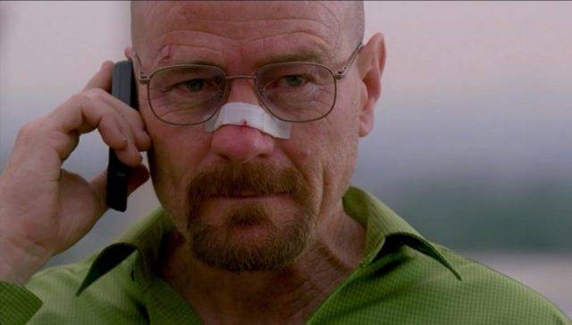

Sherlock Holmes
Sherlock Holmes is a high functioning sociopath working as a Detective. He is the man the police come to, if they are getting stuck on a case. The brilliance of this man has surprised me at least twice in every single episode of the series. From just analyzing a person down to every single detail, to solving the most tangled crime cases ever, this man did it all.
Walter White
Walter Hartwell White is a former chemistry teacher who started a drug empire with his former student, that ended up being the largest meth operation in American history. Thanks to his scientific knowledge, Walter managed to cook meth that was as pure and highly effective as any other on the market, which is why Jesse Pinkman, his former student and accomplice, and Walter, who turns into a ruthless drug lord known as "Heisenberg", now dominate the meth market.
Sheldon Cooper
Sheldon Lee Cooper is a Caltech theoretical physicist. He started college at the age of 11 and already had his first Ph. D at 16 years old. He also received a Nobel prize for his theory regarding Super-Asymmetry.
Michael Scofield
Because of his incredible talent and his amazing mind, he managed to escape three prisons in his lifetime. But not only that, he also outplayed some of the highest people from the company to steal their most valuable thing.
Dexter Morgan
A man who dedicates one part of his life to working as a forensic blood specialist at Miami metro homicide and the other half killing people, collecting nicknames like "The bay harbor butcher". However, he doesn't just randomly kill people. Dexter only hurts those who fit his Code. The code, which has been taught to him by his adoptive father, states to only kill those who have committed a crime and not faced the punishment they deserved. Thanks to his brilliant mind, he manages to not get caught along his murderous adventures.